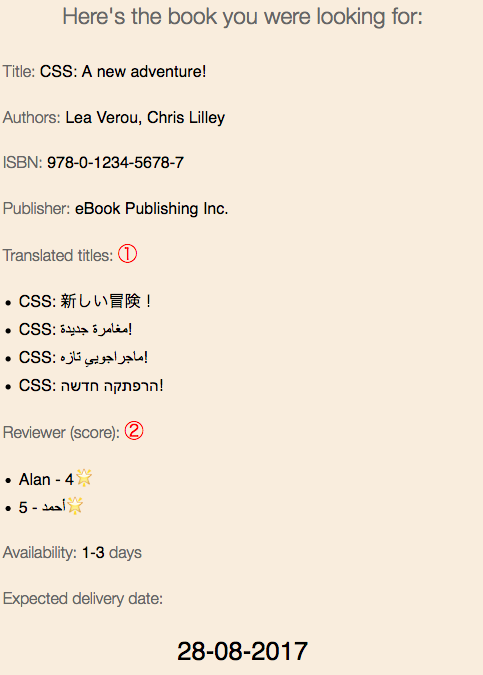
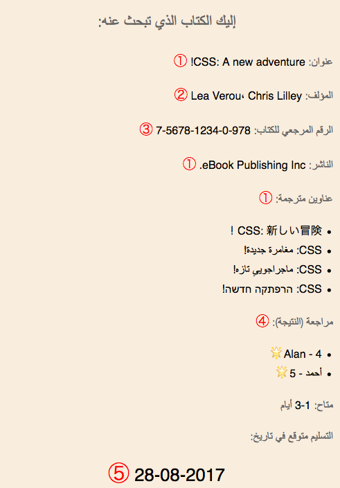
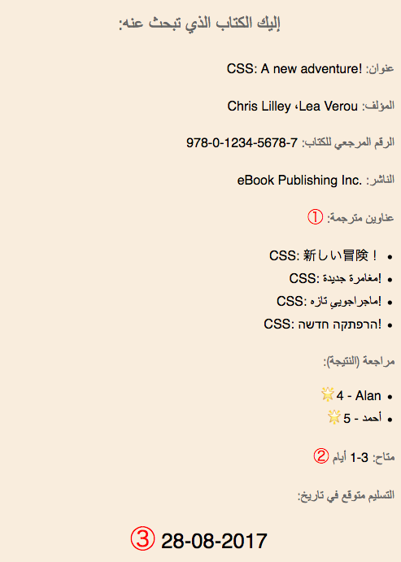
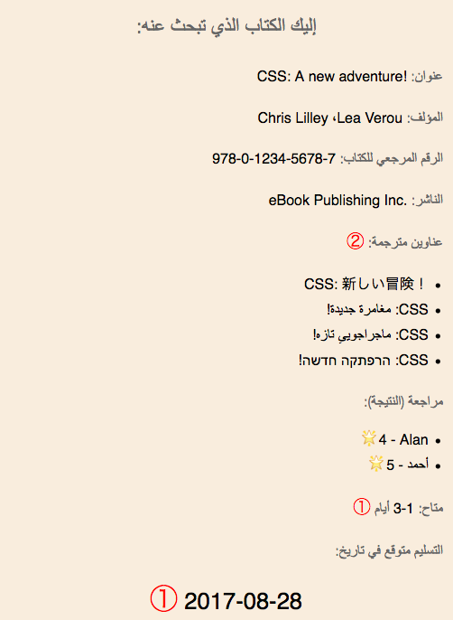

Intended audience: authors of HTML and other markup, JavaScript coders, spec developers dealing with strings, and anyone who needs to better understand what problems can arise when using the same strings in different directional contexts.
This article illustrates problems that can arise when strings are inserted into text and then displayed to users in different directional contexts: left-to-right (LTR) vs. right-to-left (RTL).
Nota bene! The examples on this page are not intended to show you how to write code to handle bidi strings. They are simply meant to illustrate certain causes and effects.
Red, circled digits indicate places where there are problems. Look at the list item with the same number (below the example) to find an explanation of the issue at hand.
The example cards were actually generated using scripting, however we have converted the examples to images in this page, to ensure you see what is intended. You can click on the "Test in your browser" links to see live examples.
For a more in-depth discussion of the issues illustrated here, and possible solutions, see Strings on the Web: Language and Direction Metadata.
The strings we'll use represent data from a single book record. Here they are:
{
"isbn": "978-0-1234-5678-7",
"title": "CSS: A new adventure!",
"translations": [
{ "title":"CSS: 新しい冒険！","lang":"ja"},
{"title":"CSS: مغامرة جديدة!","lang":"ar"},
{"title":"CSS: ماجراجوییِ تازه!","lang":"fa"},
{"title":"CSS: הרפתקה חדשה!","lang":"he"}
],
"authors": ["Lea Verou", "Chris Lilley"],
"language": "en",
"pubDate": "2015-06-18",
"publisher": "eBook Publishing Inc.",
"coverImage": "https://example.com/css_adventure.jpg",
"availability": "1-3",
"delivery": 1503874800000,
"reviews": [{"name":"Alan", "score":4},
{"name":"أحمد", "score":5}
]
}
Here we take the strings, programmatically, and simply add them to span elements in an HTML template for viewing by a British user.

As you might imagine, there's not much wrong here, however there are two bugs, the first of which affects three of the translation titles, and the second the review scores.
The title of the book in the arabic translation should read: CSS: مغامرة جديدة! , and the same applies to the persian and hebrew translations. Note how the text 'CSS' should appear on the right of the arabic text, and the exclamation mark should appear at the far left of the title.
The items in the string have been incorrectly presented because the browser assumed that the word CSS and the exclamation mark were part of the surrounding english context, and so laid them out on the incorrect assumption that the overall LTR direction of the card is applicable to this text too.
The list item for the review score of Ahmed (أحمد) has the score itself way over on the left, and the star alongside Ahmed's name.
This is because the bidi algorithm treats numbers as part of the preceding directional run, and extends that run in the same direction. Treating Ahmed's name and the score all as a single item, it lays them out in RTL order. Not what you want in a LTR page!
Here we add the strings to a template that applies no extra information around the strings when it inserts them. This is an Arabic template, and the overall direction is RTL.

You can see that the arabic, persian and hebrew translations of the book title (in the bulleted list) are now displayed as expected, since they inherit the base direction of the card (RTL). However, we now run into quite a few different problems:
The exclamation mark, which is part of the book title, appears to the right of the title. (This also happens for the Japanese title, in the bulleted list.) The same issue arises a little further down, where the period indicating an abbreviation of Inc. appears in the location you'd expect to find a sentence-final full stop.
This is because the bidi algorithm is given no indication that these punctuation marks are actually part of the LTR sequence, and so treats them as part of the RTL text, and puts them where you would therefore normally expect to find them in that case.
The author's names are ordered LTR, whereas Lea's name should appear on the right (ie. first, for the Arabic reader), followed by Chris's name on the left. Note also that the comma (an inverted arabic one) appears to the left of the space, which would be confusing for readers.
This is because the bidi algorithm assumes that a sequence of LTR characters that are uninterrupted by a RTL character with strong directionality is a contiguous directional run. However, in an overall RTL context this list should be ordered right-to-left.
The order of the numbers that make up the ISBN sequence are reversed. This is not obvious to the user!
The hyphen, and a few other characters, have special properties when used as a number separator, or in mathematical expressions in Arabic, Thaana, or Syriac. If the bidi algorithm identifies a character from those scripts prior to a sequence of numbers separated by hyphens, it orders the sequence right-to-left. This is how an Arabic user would normally expect to read a range or mathematical expression. So a range such as 10-12 in English, where the hyphen means 'to', would look like this in Arabic: 12-10.
You can see this right-to-left order applied correctly in the Availability field near the bottom of the form, which indicates a range of 1-3 days by showing "3-1".
It should be noted that this would not be a problem in a Hebrew form, where the ISBN is preceded by a Hebrew character. Hebrew readers prefer to read ranges and expressions LTR, and the bidi algorithm produces them that way by default after a hebrew character.
The review score list looks ok now for Ahmed, but Alan's line is now scrambled from the point of view of an Arabic reader (for the same reasons, just in reverse).
The date is incorrectly ordered for an Arabic user. It should read 2017-08-28.
Here the sequence is ordered LTR because the number is not preceded by an Arabic, Thaana, or Syriac, character. By default, the bidi algorithm arranges hyphen-separated numbers in LTR order.
A brief note concerning dates: The delivery date has been generated from an incremental time value using a numeric format appropriate for the locale of the reader. It's not relevant here that purely numeric dates are usually not a good idea – is 02-03-2004 the 2nd of March or the 3rd of February? – and that using a name for the month would certainly have prevented any ordering issues. This date format does turn up in the wild, and for our purposes provides a useful additional example of a hyphen-separated number sequence (besides ranges and expressions) which needs to be read right-to-left in Arabic. The main purpose here is to examine the behavior of this special type of string under 'laboratory conditions'.
Here we add bdi elements around each string as it is inserted into the HTML. The bdi element isolates the string directionally from its surroundings, and sets the string's base direction to that of the first strong directional character in the string.

This solves quite a few problems: the punctuation is in the right place, the order of Lea and Chris's names is correct (and so is the placement of the comma), and the ISBN number looks correct.
We also solved the issue of the review scores. We did this by wrapping both the name and the score in isolating markup (eg. using the bdi element or dir="auto"). This breaks the link between the name and the number, and allows the relative order of each to be determined by the overall context. Note that we needed to wrap these items individually – it was not possible to achieve this by adding markup at the li level.
However, a few issues remain:
The order of the words and the exclamation mark in the arabic, persian and hebrew titles is now wrong.
This is because the bidi algorithm has to look inside the boundaries of the isolated text in order to determine its direction, and it does so by examining the direction of the first strong directional character (in this case the C for CSS). It therefore wrongly assumes that the direction is LTR, and uses that as the base direction.
To resolve this issue, we need some way of knowing that the base direction for this isolated segment should be RTL, rather than the LTR indicated by the first strong character.
The availability range is shown as 1-3, rather than 3-1.
Because the range is isolated from the preceding arabic text, the bidi algorithm doesn't apply the special ordering for ranges that would produce the order 3-1.
To resolve this problem, we need to indicate that the context is that of the arabic language. Note that this is a language-specific issue, rather than a script-specific issue, since the order shown is fine for Persian (and Hebrew).
The date is still in the wrong order for arabic language readers.
The isolation makes no difference to the problem we already had earlier.
So we see some significant improvements, but some new problems. One of these problems is due to the isolation breaking the language context. The other is due to incorrect cues being used to determine base direction from the first strong character.
For this third attempt we resort to a couple of additional strategies to fix the remaining problems.

Here's how we fixed the problems:
Because we know that this is a card that is meant to be read by Arabic language users, we changed the JavaScript code that does the display so that it outputs U+061C ARABIC LETTER MARK (ALM) just inside the isolating markup for the availability range and the delivery date. This has the effect of inserting an invisible arabic character before the availability range and the date, which then produces the desired effect.
Note that we were only able to do this because we knew (a) what the data was (ie. a range and a date), and (b) we knew that the context was that of Arabic language text. Note, also that we didn't insert this character for the ISBN number, which has to be read LTR, and we wouldn't insert it for Persian language text (or Hebrew).
If we were dealing with a situation in which we didn't know the type and format of the data involved, or the language of the surrounding context, we would still have a problem.
To solve the directionality of the Arabic title in the bulleted list we had to change the source data. For the purpose of the example above, we need to read from a different JSON file. That file uses three different strategies for resolving the problem (for the purposes of demonstration – normally you'd probably want to choose one or the other).
The relevant lines in the JSON file now look like this:
"translations": [
{"title":"CSS: 新しい冒険！","lang":"ja",
{"title":"\u200FCSS: مغامرة جديدة!","lang":"ar"},
{"title":"CSS: ماجراجوییِ تازه!","lang":"fa", "direction":"rtl"},
{"title":"CSS: הרפתקה חדשה!","lang":"he"}
],
The first strategy involves putting an RLM (invisible strongly-RTL Unicode character U+200F) at the start of the translation of the book title in Arabic (ie. the first of the two book titles using the Arabic script). This now becomes the first strong directional character inside the isolated range, and sets the base direction of the isolated text to RTL.
The second strategy was used for the persian translation, and was to add a direction property to the object containing the string. This direction property indicates the required direction for those strings, and is read by the JavaScript as it fills in the template. As a result, a dir attribute is set on the bdi element, with the value rtl.
The third strategy was used for the hebrew translation. It involved looking at the language metadata provided with the hebrew string, checking it against a list of languages that are usually written in RTL scripts and, if it finds a match, a dir attribute is set on the bdi element, with the value rtl.
It may be worthwhile to reflect a little on the three strategies employed for item 2.
Putting an RLM at the start of a string that would otherwise be incorrectly interpreted, seems like a simple fix. It does, however, change the identity of the string, which may be a concern. The other question it raises is how that RLM got there.
It is unlikely that users will add RLMs to strings when they create them. The mechanics of such characters are not well understood by many users (how many English-speaking people do you know who would be able to use an LRM in the converse situation?), and actually keyboards on mobile devices generally don't even provide them. Moreover, if a user is typing in the book name into, say, an HTML page where the form they are using inherits a dir="rtl" setting, they won't see any need to use an RLM, since the text will look fine to them without one (because the form they are using is applying a RTL base direction).
If the application which stores the string can detect the directional context in which it was created, it would be able to then add an RLM to the beginning of the string automatically. There are dangers here, though, besides that of changing the identity of the string. For example, the application may not make the right assumption sometimes, and may fail to detect the original directional context in others.
There is also the potential for error where a RTL string begins with LRM. Was that there intentionally, or is it the result of cut & paste? If the person who created the string inserted it, did they do so intentionally to set the base direction for the whole string, or did they intend it to modify the direction in a small part of the beginning of the string?
Adding an additional field to the JSON to store the directional information of problematic bidi strings may avoid some of the latter problems. However, it is even less likely that users will create this metadata at the same time as they create the string, so we will again need to rely on the application which stores the string to detect the original directional context and store that in the direction property. (HTML5 provides a mechanism for that, by the way, with dirname.) It does, however, create an overhead for the complexity of the data and the application consuming that data, which has to be aware of the existence of the direction value-pair, and know what to do with it.
For the hebrew translation, to guess at the required direction we took advantage of the fact that we had information about the language of the text, and that we know that Hebrew is typically written with a RTL script.
In the general case, such as in an HTML document, it's actually a bad idea to rely on language information to apply direction because lang and dir tags have very different uses and effects. In this particular case, we got lucky because the usage is unspecific.
An obvious drawback of this approach is that it relies on language information being available. Another drawback of this approach is that every time an application wants to use a string that will be viewed by a user it needs to do a lookup, to see whether the language corresponds to a RTL script.
In some cases it may be possible to write a particular language in more than one script, and so you'd need to know which script was used. Alternatively, the string may be a Latin transcription of text that is normally written using a non-Latin script. In these cases, the language label would need to communicate to the application what script was used as well as the language. For example, Azeri can be written in Cyrillic, Latin, or Arabic scripts, so you'd want to see something like az-Arab as the language tag. For a Latin transcription of Hebrew you'd want to have a he-Latn label. The application would need to be able to parse the language tag in order to obtain the script information, where available, since that trumps the language.
For a much more in-depth discussion of why language can't be used to derive direction information, see Base direction and language tags.
Authoring HTML & CSS
Developing specifications